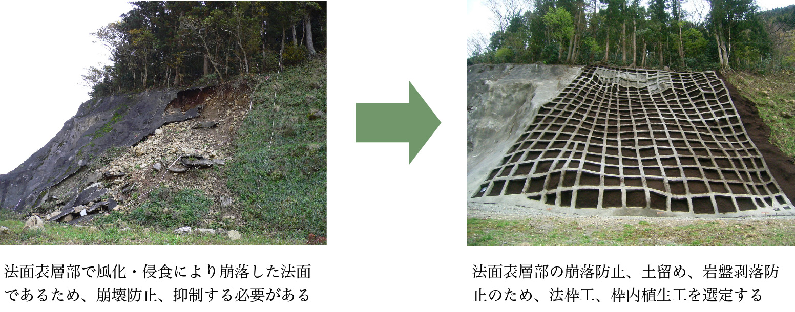

事業内容
法面保護工とは
盛土工または切土工によって人工的に形成された土または岩の斜面をそれぞれ盛土のり面および切土のり面といい、これらを総称してのり面といいます。「のり面を造成するための土工」と「のり面を保護するための種々の保護工」とを合わせて「のり面工」といい、のり面の浸食や風化、崩壊を防止するためにおこなう植生や構造物によるのり面被覆等を「のり面保護工」といいます。

工法選定
法面は、時間の経過とともに風化、侵食、浸透水の影響などにより不安定化するので、迅速かつ確実に安定化させることが第一義となります。しかし、法面の出現場所や構造上の観点から目立ちやすく、また周辺と違和感も生じやすく、管理、補修が困難となることが多くあります。したがって、一般的には法面の安定化を絶対条件としたうえで周辺環境と調和がとれ、かつ永続性が確保でき、維持管理が少ないものが望まれますが、法面の出現場所によって重点を考慮することが要求されます。
造成目標となる主なもの
- 1) 法面自体の安定確保
- 地域環境や景観などに重点をおく必要のない場合、あるいは防災上、構造上、どうしても環境、景観への配慮が不可能な場合で、法面自体を安定させたい場合。
- 2) 環境、景観の保全、創造を重視
- 法面が出現した環境に応じて、法面の仕上がり状態を設定する場合で、一般的には周辺環境との調和を図る。
- 3) 施設の安全確保
- 法面自体の安定や環境、景観に重点をおかないで、法面下の施設の安全が確保できればよい場合。
法面工法選定の考え方の手順